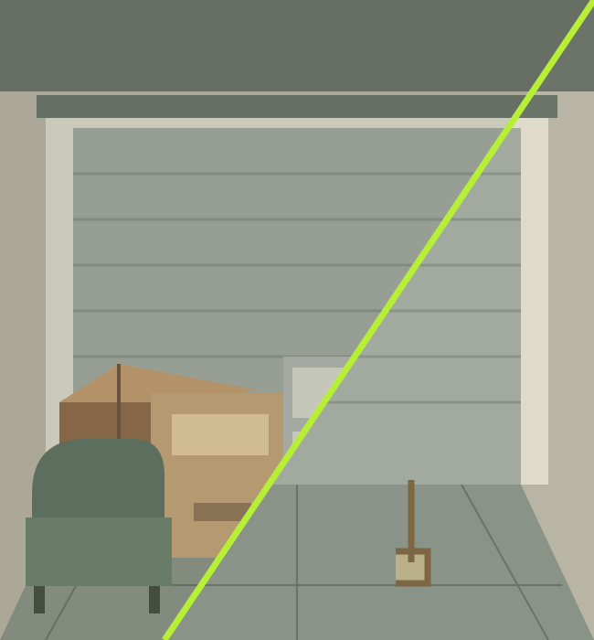

SHOW THE PILE.
Document what needs to go. A real carrier should confirm waste types and price before agreeing the job.
JUNK REMOVAL / NOTTINGHAM & DERBY
Two people. One van. No standing around.
We load, clear and sweep — with a price
agreed before the heavy lifting starts.
Fictional crew. Demo phone from brief; no real pickup is arranged here.

BEFOREAFTER ↗A CLEAN SLATE. NOT ANOTHER WEEKEND LOST.WHAT WE TAKE
No matching item. Ask a qualified waste carrier before arranging disposal.
Asbestos, liquid paint and car tyres need specialist disposal. Never mix hazardous materials into a household load.
Select an accepted item to add it to your local clear-out list.
STRAIGHTFORWARD PRICES
Example load bands. Select a size to see what it typically fits.
Brief’s example prices include labour, loading, disposal and VAT, with no stairs surcharge. Real waste type, weight and access require assessment. These are stated bands, not an automatic quotation.
Choose a stated load band for your checklist.
THREE STEPS. ZERO HEAVY LIFTING.
Document what needs to go. A real carrier should confirm waste types and price before agreeing the job.
Confirm access, timing and what’s included. Get the carrier details and terms in writing.
A good clearance leaves a clean space and appropriate waste-transfer documentation.
GONE DOESN’T MEAN FORGOTTEN
Usable furniture may suit a local reuse charity. Electricals and metals require appropriate recycling routes. Ask a real carrier where your load will go and keep the transfer notes.
No diversion percentage or charity partnership is claimed by this concept.
OUR EXAMPLE PATCH
A LITTLE PREP GOES A LONG WAY
This checklist helps you describe your pile. Add accepted items above, choose a load band, and note the access.
Local-only planning. No photo uploads, dispatch, price calculation or booking.
TAKE BACK YOUR SPACE
Example contact from the brief. Verify a real licensed carrier before calling or arranging collection.